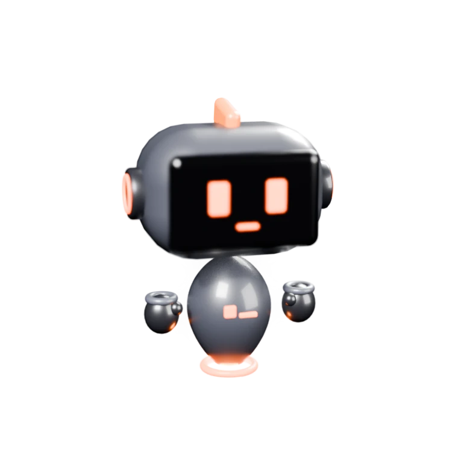

Ein Entwurf ist bereit.
Ein Agent bereitet die nächsten Schritte vor. Die Entscheidung bleibt beim Menschen.
Moellenbeck-Digital / Design & Assets
Das Design unserer Website für Ihre nächste Seite, App oder Ihren Agenten. Mit echten Komponenten, lokalen Schriften und unserem Avatar.

Drei dunkle Flächen schaffen Tiefe. Orange zeigt die nächste Aktion. Blau und Violett bleiben dezentes Hintergrundlicht oder kennzeichnen einzelne Agenten.
Auf Orange steht dunkler Text. --text-muted ist nur für Dekoration reserviert; für lesbare Labels verwenden wir --text-3.
Markante Überschriften, ruhiger Lesetext und technische Details. Alle Schriften werden lokal geladen; die Lizenzdateien liegen im Font-Ordner.
Space Grotesk · 700 · Überschriften
Agenten bereiten vor.
Ein Mensch entscheidet.
Inter · 400–600 · Lesetext
Software wird verständlich, wenn sie den nächsten Schritt klar benennt. Kurze Absätze und begrenzte Zeilenlängen geben dem Inhalt Raum.
DM Mono · 400/500 · Bedienung & Metadaten
MD_Process / Entwurf zur Prüfung
Eine klare Hauptaktion, sichtbarer Tastaturfokus und Rückmeldung im Text. Die Beispiele verwenden dieselbe CSS-Datei wie die Website.
Ein Agent bereitet die nächsten Schritte vor. Die Entscheidung bleibt beim Menschen.
Ja. Native HTML-Elemente öffnen und schließen die Antwort per Klick, Enter oder Leertaste.
CSS und Schriften kopieren, md-ui auf den Container setzen und das Beispiel unten übernehmen.
Der MD-Roboter ist ein visueller Begleiter. Er ersetzt keine Statusmeldung und wird nicht als menschlicher Gesprächspartner dargestellt.
Die freigestellte Figur für Begrüßungen, das quadratische Profilbild für Agenten und App-Konten.

Originalproportionen und Orange erhalten. Die SVG-Wortmarke verwendet eine System-Monospace-Schrift; die Darstellung kann je Plattform variieren.
Statisch ist der Standard beim Einbetten. Die Website animiert die Figur über agents.js und agents.css; dafür sind Pausensteuerung, reduzierte Bewegung und die originale Bildgeometrie erforderlich. Details stehen in der DESIGN.md.
Für Agenten: die Designregeln als Kontext laden. Für Websites und Apps: CSS, Font-Ordner inklusive Lizenzen und die benötigten Bilder mit derselben Ordnerstruktur übernehmen.
Lies https://moellenbeck-digital.io/DESIGN.md und verwende
https://moellenbeck-digital.io/assets/design-system.css als Basis.
Übernimm die dort dokumentierten Farben, Schriften und Komponenten.
Verwende den MD-Avatar aus den angegebenen Originaldateien.
Beachte Tastaturbedienung, Kontraste und reduzierte Bewegung.<link rel="stylesheet" href="assets/design-system.css">
<section class="md-ui" aria-label="Agenten-Assistent">
<article class="md-card">
<img class="md-avatar" src="assets/img/avatar-200.webp"
width="200" height="261" alt="MD-Agent">
<h2>Wie können wir helfen?</h2>
<p>Beschreiben Sie die Aufgabe. Wir bereiten den nächsten Schritt vor.</p>
<a class="md-button" href="mailto:admin@moellenbeck-digital.io">
Kontakt aufnehmen
</a>
</article>
</section>